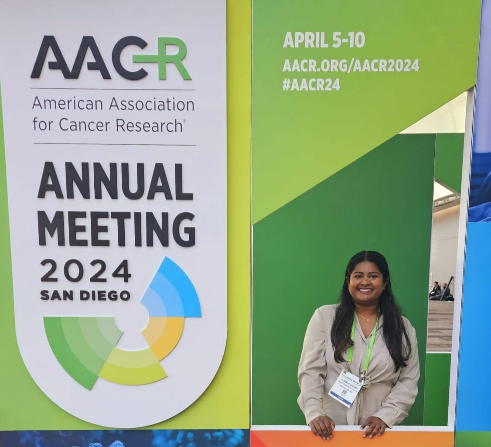

Dr. Poorva Ghosh
Molecular Biologist • Oncology & Immunology • Drug Discovery Scientist
Heme biology
Lung cancer
Antibody & small molecules
In vivo models
Flow cytometry
I am a molecular biologist with extensive experience driving small-molecule drug discovery
in oncology and allergic diseases. Over the years, I have led cross-functional projects from
target validation through preclinical development, combining deep technical expertise with
strategic leadership to translate science into impactful therapies. I am passionate about
building collaborative teams, advancing innovative research, and turning complex challenges into
transformative therapies.
🔬 Featured:
Biologists design new molecules to help stall lung cancer
| 📚 Google Scholar:
Profile
Professional Experience
Scientist II — Corvus Pharmaceuticals, Inc.
South San Francisco, CA | Aug 2022 – Present
- Leads target validation and MOA studies for small-molecule therapeutics in T-cell lymphoma, solid tumors, and allergy models.
- Developed screening assays for next-gen autoimmune disease drug candidates.
- Coordinated cross-functional research and CRO partnerships; authored IND-supporting regulatory documents.
Postdoctoral Researcher — Dr. Kathryn O’Donnell Lab
UT Southwestern Medical Center | Jun 2020 – Jul 2022
- Characterized a novel monoclonal antibody for lung cancer treatment; evaluated in vivo efficacy and MOA.
- Engineered transgenic and conditional knockout mouse models for oncogenic pathway studies.
- Co-inventor on a patent for anti-PCDH7 monoclonal antibodies (lung cancer therapy).
Graduate Researcher — Dr. Li Zhang Lab
University of Texas at Dallas | Mar 2015 – May 2020
- Discovered and evaluated heme-targeting peptide strategies for lung cancer therapy.
- Used optoacoustic tomography for tumor imaging and vascular oxygenation studies.
- Analyzed heme flux and tumor metabolism using genetically engineered mouse models.
Teaching Assistant / Lecturer
UT Dallas & R.Y.K. Science College, India | 2012 – 2020
- Taught undergraduate courses in molecular biology, biochemistry, and cell biology labs.
- Mentored students in laboratory techniques, small animal handling, and imaging.
Education
Ph.D., Molecular and Cell Biology
University of Texas at Dallas, USA (2020)
M.S., Molecular and Cell Biology
University of Texas at Dallas, USA (2016)
M.Sc., Biotechnology
Savitribai Phule Pune University, India (2011)
B.Sc., Biotechnology
Savitribai Phule Pune University, India (2009)
Selected Publications
- Hsu L.Y. et al., Soquelitinib, a selective ITK inhibitor modulating tumor immunity. npj Drug Discovery, 2024.
- Ningyan Zhang et al., Monoclonal Antibodies Against PCDH7 for Lung Cancer Therapy, U.S. Patent filed 2023.
- Ghosh P., Mason R.P., Liu L., Zhang L. Modulation of heme and tumor vascular oxygenation. Oncoscience, 2022.
- Dey S. et al., Heme sequestration suppresses lung carcinoma progression. Molecular Cancer Research, 2021.
Full list available on Google Scholar.